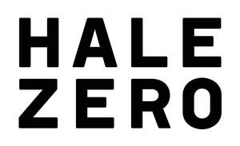
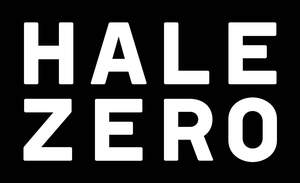

Trade Mark Journal No.2025/044 31 October 2025
UK00004281295 21 October 2025 (9,15,16,18,20,25,35,38,41,42,44)
Mark 1

Mark 2

Mark 3
- Class 9
- Music recordings; Music headphones; Music cassettes; Music software; Music tapes; Downloadable music sound recordings; Prerecorded music videos; Digital music players; Tape recordings of music; Pre-recorded CDs featuring music; Downloadable digital music; Audio tapes featuring music; Electronic sheet music, downloadable; Portable music players; Musical video recordings; Phonograph records featuring music; Prerecorded music audio tapes; Downloadable video recordings featuring music; Downloadable music files; Pre-recorded audio cassettes featuring music; Downloadable musical sound recordings; Digital music downloadable from the Internet; Musical recordings; Musical sound recordings; Pre-recorded DVDs featuring music; Prerecorded video cassettes featuring music; Prerecorded audio tapes featuring music; Docking stations for digital music players; Prerecorded video tapes featuring music; Pre-recorded video tapes featuring music; Computer software for creating and editing music and sounds; Optical discs featuring music; Pre-recorded laser discs featuring music; Series of musical sound recordings; Musical cassettes.
- Class 15
- Music synthesizers; Synthesizers (Music -); Sheet music stands; Synthetic music apparatus; Electronic musical synthesizers; Musical synthesizers.
- Class 16
- Music books; Sheet music; Music magazines; Music scores; Music sheets; Printed music; Music note books; Music in sheet form; Printed music books; Instruction manuals for music synthesizers; Printed sheet music; Printed books in the field of music education.
- Class 18
- Music bags; Music cases.
- Class 20
- Furniture; Furniture and furnishings; Upholstered furniture; Metal furniture and furniture for camping; Dressers [furniture]; Cushions [furniture]; Credenzas [furniture]; Wooden furniture; Furniture cabinets; Cabinets [furniture]; Patio furniture; Recliners [furniture]; Bentwood furniture; Kitchen furniture; Washstands [furniture]; Pouffes [furniture]; Cupboards being furniture; Bedroom furniture; Drawers for furniture; Outdoor furniture; Nursery furniture; Benches [furniture]; Household furniture; Garden furniture; Bathroom furniture; Lawn furniture; Desks [furniture]; Furniture shelves; Shelves [furniture]; Panelling for furniture; Furniture for kitchens; Kitchen dressers [furniture]; Wooden shelving [furniture]; Leather furniture; Slatted furniture; Stationery cabinets [furniture]; Chairs being office furniture; Tables [furniture]; Shop furniture; Seating furniture; Furniture moldings; Office furniture; Furniture (Office -); Indoor furniture; Furniture for bathrooms; Consignment shelving [furniture]; Lounge furniture; Furniture for storage; Storage furniture; Furniture racks; Racks [furniture]; Bamboo furniture; Furniture of metal; Metal furniture; Trolleys [furniture]; Furniture parts; Furniture partitions; Furniture frames; Arbours [furniture]; Furniture chests; Pet furniture; Lockers [furniture]; Pedestals [furniture]; Furniture for vivariums; Furniture partitions of wood; Partitions of wood for furniture; Furniture for offices; Furniture (Partitions of wood for -); Consoles [furniture]; Antique style furniture; Furniture for shops; Transformable furniture; Doors for furniture; Furniture doors; Stackable furniture; Furniture for conservatories; Mirrors [furniture]; Furniture for washrooms; Glass furniture; Trestles [furniture]; Metal cabinets [furniture]; Inflatable furniture; Furniture (Inflatable -); Fireguards [furniture]; Garden furniture manufactured from wood; Wooden racks [furniture]; Seats [furniture]; Metal shelving [furniture]; Joints for furniture; Furniture for children; Furniture for caravans; Modular bathroom furniture; Shelves being nursery furniture; Computer furniture; Legs for furniture; Furniture for saunas; Drawers [furniture parts]; Drawers as furniture parts; Furniture for camping; Camping furniture; Screens [furniture]; Furniture screens; Domestic furniture; Cane furniture; Furniture for babies; Countertops [furniture parts]; Metal office furniture.
- Class 25
- Clothing; Knitwear [clothing]; Jackets [clothing]; Ready-to-wear clothing; Woolen clothing; Furs [clothing]; Layettes [clothing]; Clothing layettes; Garments for protecting clothing; Linen clothing; Headbands [clothing]; Headbands for clothing; Gloves [clothing]; Gloves as clothing; Clothes; Aprons [clothing]; Maternity clothing; Jerseys [clothing]; Kerchiefs [clothing]; Denims [clothing]; Shorts [clothing]; Cashmere clothing; Capes (clothing); Oilskins [clothing]; Gabardines [clothing]; Leather clothing; Clothing of leather; Leather (Clothing of -); Silk clothing; Parts of clothing, footwear and headgear; Collars [clothing]; Knitted clothing; Veils [clothing]; Hoods [clothing]; Windproof clothing; Embroidered clothing; Corsets [clothing, foundation garments]; Wristbands [clothing]; Bandeaux [clothing]; Belts [clothing]; Belts for clothing; Rainproof clothing; Waterproof clothing; Casual clothing; Visors [clothing]; Jackets being sports clothing; Jackets (Stuff -) [clothing]; Stuff jackets [clothing]; Playsuits [clothing]; Bottoms [clothing]; Ready-made clothing; Clothing for leisure wear; Infant clothing; Trunks being clothing; Latex clothing; Woven clothing; Leisure clothing; Ties [clothing]; Clothing for sports; Sports clothing; Drawers [clothing]; Drawers as clothing; Athletic clothing; Clothing for children; Muffs [clothing]; Bodies [clothing]; Clothing for babies; Tops [clothing]; Clothing for infants; Clothing for cycling; Water-resistant clothing; Weatherproof clothing; Triathlon clothing; Pockets for clothing; Fabric belts [clothing]; Handwarmers [clothing]; Clothing for skiing; Beach clothing; Thermal clothing; Chaps (clothing); Cowls [clothing]; Men's clothing; Fishing clothing; Mitts [clothing]; Braces for clothing; Dance clothing.
- Class 35
- Online retail services for downloadable and pre-recorded music and movies; Promotion of musical concerts.
- Class 38
- Music broadcasting.
- Class 41
- Music concerts; Recording of music; Music recording; Music publishing and music recording services; Music performances; Jazz music entertainment services; Production of music concerts; Music education; Presentation of music concerts; Pop music concerts (Organisation of -); Live music concerts; Performance of music; Production of music; Music production; Music concert services; Teaching of music; Music publishing; Publishing of music; Performance of music and singing; Tuition in music; Organisation of music concerts; Production of sound and music recordings; Music festival services; Instruction in music; Music instruction; Performing of music and singing; Performance of dance, music and drama; Live music performances; Music entertainment services; Publication of music; Arranging of music performances; Direction of music performances; Music composition services; Organising of festivals relating to jazz music; Composition of music for others; Music composition for others; Music recording studio services; Live music services; Rental of phonographic and music recordings; Music mixing services; Live music shows; Production of music shows; Arranging of music shows; Artistic management of music venues; Music cassettes (Rental of -); Music library services; Tuition in music appreciation; Music group services; Music performance services; Music production services; Publication of sheet music; Music publishing services; Provision of live music; Music transcription for others; Musical concerts by radio; Musical entertainment; Music competition services; Arranging and conducting of music concerts; Live musical concerts; Publication of music books; Providing digital music from the internet; Music transcription services; Entertainment in the nature of live performances by musical bands; Presentation of musical concerts; Musical concerts by television; Education and training in the field of music and entertainment; Selection and compilation of pre-recorded music for broadcasting by others; Sound recording and video entertainment services; Entertainment in the form of recorded music (Services providing -); Musical concert services; Arranging of musical entertainment; Entertainment in the nature of dance performances; Production of musical recordings; Entertainment in the nature of live dance performances.
- Class 42
- Encoding of digital music; Encryption of digital music; Electronic storage of digital music; Design of clothing, footwear and headgear; Designing of clothing; Design of clothing; Design of clothing accessories.
- Class 44
- Music therapy.
Fiqtion One Limited